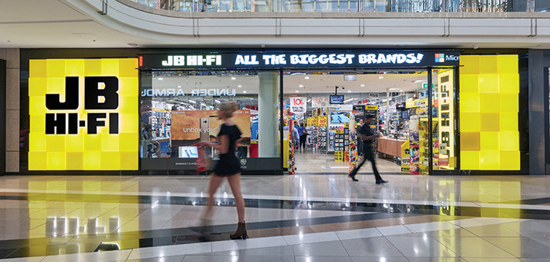
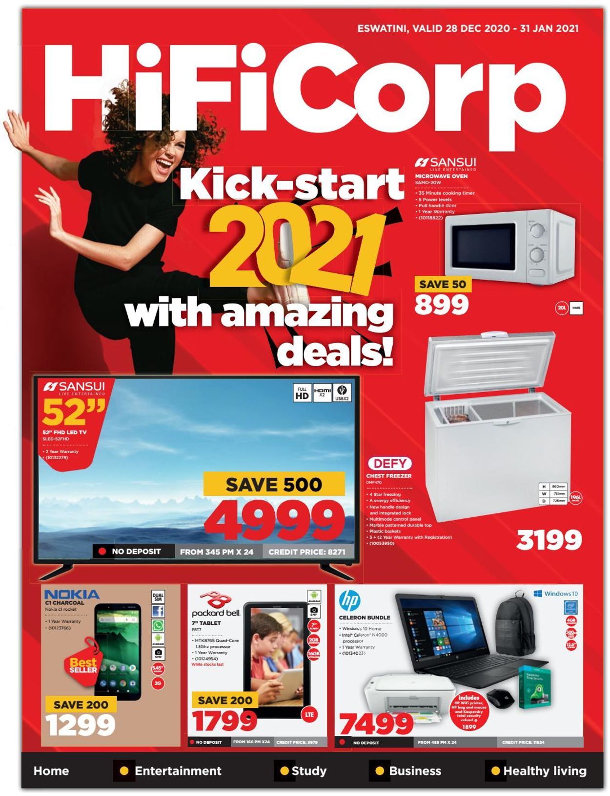

HIFI
JB Hi-Fi was established in the Melbourne suburb of Keilor East by John Barbuto in 1974.[1] Barbuto sold the business in 1983 to Richard Bouris, David Rodd, and Peter Caserta, who expanded JB Hi-Fi into a chain of ten stores in Melbourne and Sydney turning over $150 million by 2000, when they sold the majority of their holding to private equity. It was subsequently floated on the ASX in October 2003. As of August 2018, JB Hi-Fi is ranked as the equal 7th largest consumer electronics and home appliance retailer in the world.[3] On 28 April 2021, it was announced that Richard Murray, JB Hi-Fi's CEO of seven years, would be leaving his role at the end of August to work alongside trader Solomon Lew at the latter's company Premier Investments. Terry Smart, the head of electronics retailer the Good Guys, was announced as Murray's replacement on the same day.
Hi-Fi stores are media, electronics and small appliances stores, which is the largest store format by store numbers. JB Hi-Fi Games Superstore outlets only sell video game related products, including PlayStation, Xbox, Nintendo, and PC gaming. JB Hi-Fi Music SuperStore outlets sell music related products, including CD's, vinyl records, and music DVD's. JB Hi-Fi DVD Superstore outlets sell DVD and Blu-Ray products. JB Hi-Fi Home stores are similar to JB Hi-Fi stores, selling electronics and small appliances. Although JB Hi-Fi Home stores are larger than traditional stores and sell large appliances. The concept was first tried in late 2012, with some existing stores being converted to JB Hi-Fi Home stores. JB Hi-Fi Express stores is a concept store launched in October 2019, as a smaller version of the traditional JB Hi-Fi store, with a focus on mobile products, and less focus on appliances, computers or televisions. The first store opened in Southbank, Victoria.
Email: hifi@eletronics.co.za.
Operating Hours:Monday - Friday: 08h00 - 17h00.
Saturday: 08h00 - 17h00. Sunday: 08h00-13h00.
WHERE WILL YOU FIND IT?
SPUR is located on third floor shop No.35
 